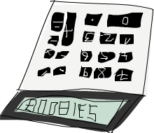

函数式地思考来解决问题
Table of Contents
1 函数式地思考来解决问题
在这一章中，我们会查看几个有趣的问题，并尝试用函数式的方式来漂亮地解决他们。我们并不会介绍新的概念，我们只是练习我们刚学到的写程序的技巧。每一节都会探讨不同的问题。会先描述问题，然后用最好的方式解决他。
1.1 运算逆波兰表示法(Reverse Polish notation form)
我们在学校学习数学的时候，我们多半都是用中置(infix)的方式来写数学式。例如说，我们会写 10 - (4 + 3) * 2 。 + , * , - 是中置运算子(infix operators)。在Haskell 中就像是 + 或 elem 一样。这种写法对于人类来说很容易阅读与理解，但缺点是我们必须用括号来描述运算的优先级。
逆波兰表示法是另外一种数学式的描述方法。乍看之下显得怪异，但他其实很容易理解并使用。因为我们不需要括弧来描述，也很容易放进计算机里面运算。尽管现在的计算机都是用中置的方式让你输入，有些人仍坚持用RPN 的计算机。前述的算式如果表达成
RPN 的话会是 10 4 3 + 2 * - 。我们要如何计算他的结果呢？可以想想堆叠，基本上你是从左向右阅读算式。每当碰到一个数值，就把他堆上堆叠。当我们碰到一个运算子。就把两个数值从堆叠上拿下来，用运算子运算两个数值然后把结果推回堆叠中。当你消耗完整个算式的时候，而且假设你的算式是合法的，那你就应该只剩一个数值在堆叠中，

我们再接着看 10 4 3 + 2 * - 。首先我们把 10 推到堆叠上，所以堆叠现在是
10 。下一个接着的输入是 4 ，我们也把他推上堆叠。堆叠的状态便变成 10, 4
。接着也对下一个输入 3 做同样的事，所以堆叠变成 10, 4, 3 。然后便碰到了第一个运算子=+= 。我们把堆叠最上层的两个数值取下来（所以堆叠变成 10 ）把两个数值加起来然后推回堆叠上。堆叠的状态便变成 10, 7 。我们再把输入 2 推上堆叠，堆叠变成 10, 7, 2 。我们又碰到另一个运算子，所以把 7 跟 2 取下，把他们相乘起来然后推回堆叠上。 7 跟 2 相乘的结果是 14 ，所以堆叠的状态是
10, 14 。最后我们碰到了 - 。我们把 10 跟 14 取下，将他们相减然后推回堆叠上。所以现在堆叠的状态变成 -4 。而我们已经把所有数值跟运算子的消耗完了，所以 -4 便是我们的结果。
现在我们知道我们如何手算 RPN 运算式了，接下来可以思考一下我们写一个Haskell 的函数，当他接到一个 RPN 运算式，像是 ="10 4 3 + 2 * -"= 时，他可以给出结果。
这个函数的型别会是什么样呢？我们希望他接受一个字串当作参数，并产出一个数值作为结果。所以应该会是 =solveRPN :: (Num a) = > String -> a=。
小建议：在你去实作函数之前，先想一下你会怎么宣告这个函数的型别能够帮助你 厘清问题。在 Haskell 中由于我们有够强的型别系统，光从函数的宣告就可以得到 许多信息。

当我们要实作一个问题的解法时，你可以先动手一步一步解看看，尝试从里面得到一些灵感。我们这边把每一个用空白隔开的数值或运算子都当作独立的一项。所以把 ="10 4
3 + 2 * -"= 这样一个字串断成一串 list ["10","4","3","+","2","*","-"] 应该会有帮助。
接下来我们要如何应用这个断好的 list呢？我们从左至右来走一遍，并保存一个工作用的堆叠。这样有让你想到些什么可以用的吗？没错，在 folds 的那一章里面，我们提到基本上当你需要从左至右或由右至左走过一遍list 的时候并产生些结果的时候。我们都能用 fold 来实作他。
在这个 case 中由于我们是从左边走到右边，所以我们采取 left fold。accumulator 则是选用堆叠，而 fold的结果也会是一个堆叠，只是里面只有一个元素而已。
另外要多考虑一件事是我们用什么来代表我们的堆叠？我们可以用 list来代替，list
的 head 就可以当作是堆叠的顶端。毕竟要把一个元素加到 list的 head 要比加到最后要有效率多。所以如果我们有一个堆叠，里面有 10, 4, 3 ，那我们可以用
[3,4,10] 来代表他。
现在我们有了足够的信息来写出我们的函数。他会接受一个字串 ="10 4 3 + 2 * -"=
，随即用 words 来断成 list ["10","4","3","+","2","*","-"] 。接下来我们做一个 left fold来产生出只有一个元素的堆叠，也就是 [-4] 。我们把这个元素从
list取出便是最后的结果。
来看看我们的实作：
import Data.List solveRPN :: (Num a) => String -> a solveRPN expression = head (foldl foldingFunction [] (words expression)) where foldingFunction stack item = ...
我们接受一个运算式并把他断成一串 List。然后我们用一个 folding 函数来fold 这串
list。注意到我们用 [] 来当作起始的 accumulator。这个accumulator 就是我们的堆叠，所以 [] 代表一个空的堆叠。在运算之后我们得到一个只有一个元素的堆叠，我们调用 head 来取出他并用 read 来转换他。
所以我们现在只缺一个接受堆叠的 folding 函数，像是可以接受 [4,10] 跟 ="3"=
，然后得到 [3,4,10] 。如果是 [4,10] 跟 ="*"= ，那就会得到 [40] 。但在实作之前，我们先把我们的函数改写成 point-free style，这样可以省下许多括号。
import Data.List solveRPN :: (Num a) => String -> a solveRPN = head . foldl foldingFunction [] . words where foldingFunction stack item = ...
看起来好多了。我们的 folding函数会接受一个堆叠、新的项，并回传一个新的堆叠。我们使用模式匹配的方式来取出堆叠最上层的元素，然后对 ="*"= 跟 ="-"= 做匹配。
solveRPN :: (Num a, Read a) => String -> a solveRPN = head . foldl foldingFunction [] . words where foldingFunction (x:y:ys) "*" = (x * y):ys foldingFunction (x:y:ys) "+" = (x + y):ys foldingFunction (x:y:ys) "-" = (y - x):ys foldingFunction xs numberString = read numberString:xs
我们用展开成四个模式匹配。模式会从第一个开始尝试匹配。所以 folding函数会看看目前的项是否是 ="*"= 。如果是，那就会将 [3,4,9,3] 的头两个元素绑定到 x ，
y 两个名称。所以 x 会是 3 而 y 等于 4 。 ys 便会是 [9,3] 。他会回传一个 list，只差在 x 跟 y 相乘的结果为第一个元素。也就是说会把最上层两个元素取出，相乘后再放回去。如果第一个元素不是 ="*"= ，那模式匹配就会比对到
="+"= ，以此类推。
如果项并未匹配到任何一个运算子，那我们就会假设这个字串是一个数值。如果他是一个数值，我们会用 read 来把字串转换成数值。并把这个数值推到堆叠上。
另外注意到我们加了 Read a 这像 class constraint，毕竟我们要使用到 read 来转换成数值。所以我们必须要宣告成他要属于 Num 跟 Read 两种typeclass。（譬如说 Int , Float 等）
我们是从左至右走过 ["2","3","+"] 。一开始堆叠的状态是 [] 。首先他会用
[] 跟 ="2"= 来喂给 folding 函数。由于此项并不是一个运算子。他会用 read 读取后加到 [] 的开头。所以堆叠的状态变成 [2] 。接下来就是用 [2] 跟
["3"] 来喂给 folding 函数，而得到 [3,2] 。最后再用 [3,2] 跟 ="+"= 来调用 folding函数。这会堆叠顶端的两个数值，加起来后推回堆叠。最后堆叠变成 [5]
，这就是我们回传的数值。
我们来试试看我们新写的函数：
ghci> solveRPN "10 4 3 + 2 * -" -4 ghci> solveRPN "2 3 +" 5 ghci> solveRPN "90 34 12 33 55 66 + * - +" -3947 ghci> solveRPN "90 34 12 33 55 66 + * - + -" 4037 ghci> solveRPN "90 34 12 33 55 66 + * - + -" 4037 ghci> solveRPN "90 3 -" 87
看起来运作良好。这个函数有一个特色就是他很容易改写来支持额外的运算子。他们也不一定要是二元运算子。例如说我们可以写一个运算子叫做 ="log"= ，他会从堆叠取出一个数值算出他的 log后推回堆叠。我们也可以用三元运算子来从堆叠取出三个数值，并把结果放回堆叠。甚至是像是 ="sum"= 这样的运算子，取出所有数值并把他们的和推回堆叠。
我们来改写一下我们的函数让他多支持几个运算子。为了简单起见，我们改写宣告让他回传 Float 型别。
import Data.List solveRPN :: String -> Float solveRPN = head . foldl foldingFunction [] . words where foldingFunction (x:y:ys) "*" = (x * y):ys foldingFunction (x:y:ys) "+" = (x + y):ys foldingFunction (x:y:ys) "-" = (y - x):ys foldingFunction (x:y:ys) "/" = (y / x):ys foldingFunction (x:y:ys) "^" = (y ** x):ys foldingFunction (x:xs) "ln" = log x:xs foldingFunction xs "sum" = [sum xs] foldingFunction xs numberString = read numberString:xs
看起来不错，没有疑问地 / 是除法而 ** 是取 exponential。至于 log运算子，我们只需要模式匹配一个元素，毕竟 log 只需要一个元素。而 sum运算子，我们只回传一个仅有一个元素的堆叠，包含了所有元素的和。
ghci> solveRPN "2.7 ln" 0.9932518 ghci> solveRPN "10 10 10 10 sum 4 /" 10.0 ghci> solveRPN "10 10 10 10 10 sum 4 /" 12.5 ghci> solveRPN "10 2 ^" 100.0
由于 read 知道如何转换浮点数，我们也可在运算适中使用他。
ghci> solveRPN "43.2425 0.5 ^" 6.575903
有这样一个容易拓展到浮点数而且动到的代码又在十行以内的函数，我想是非常棒的。
有一件事要留意的是这个函数对于错误处理并不好。当我们碰到非法输入的时候，他就会直接当掉。之后我们碰到Monad 的时候我们会写一个容错的版本，他的型别会是
solveRPN :: String -> Maybe Float 。当然我们现在也可以写一个，不过那会有点麻烦，因为会有一大堆检查 Nothing 的动作。如果你希望挑战的话，也可以尽管尝试。（提示：你可以用 reads 来看看一次 read 是否会成功）
1.2 路径规划
我们接下来的问题是：你的飞机刚刚降落在英格兰的希思罗机场。你接下来有一个会议，你租了一台车希望尽速从机场前往伦敦市中心。
从希思罗机场到伦敦有两条主要道路，他们中间有很多小路连接彼此。如果你要走小路的话都会花掉一定的时间。你的问题就是要选一条最佳路径让你可以尽快前往伦敦。你从图的最左边出发，中间可能穿越小路来前往右边。

你可以从图中看到，从希思罗机场到伦敦在这个路径配置下的最短路径是先选主要道路B，经由小路到 A 之后，再走一小段，转到 B之后继续往前走。如果采取这个路径的话，会花去 75分钟。如果选其他道路的话，就会花更多时间。
我们任务就是要写一个程序，他接受道路配置的输入，然后印出对应的最短路径。我们的输入看起来像是这样：
50 10 30 5 90 20 40 2 25 10 8 0
我们在心中可以把输入的数值三个三个看作一组。每一组由道路 A,道路B,还有交叉的小路组成。而要能够这样组成，我们必须让最后有一条虚拟的交叉小路，只需要走0分钟就可以穿越他。因为我们并不会在意在伦敦里面开车的成本，毕竟我们已经到达伦敦了。
正如我们在解 RPN 计算机的问题的时候，我们是用三步骤来解题：
- 首先忘掉 Haskell，想想我们自己是怎么一步步解题的。
- 想想如何在 Haskell 中表达我们的数据。
- 在 Haskell 中要如何对这些数据做运算来产生出解答。
在介绍 RPN计算机的章节中，我们首先自己用人脑计算表达式，在心中维持一个堆叠然后一项一项处理。我们决定用一个字串来表达我们的表达式。最后，我们用left fold 来走过我们这一串 list，并算出结果。
究竟我们要怎么用手算出从希思罗机场到伦敦的最短路径呢？我们可以观察整章图片，猜测哪一条是最短路径然后希望我们有猜对。这样的作法对于很小的输入可以成功，但如果我们的路径超过10000 组呢？这样我们不知道我们的解法是不是最佳解，我们只能说可能是。
所以那并不是一个好作法。这边有一张简化过后的图。

你能想出来到道路 A 上第一个交叉点的最短路径吗？（标记成 A1的点）这太容易了。我们只要看看从道路 A 出发或是从道路 B 出发穿越至道路 A两种作法哪种比较短就好。很明显的，从道路 B 出发的比较短，只要花费 40分钟，然而从道路 A 则要花费 50 分钟。那到交叉点 B1呢？同样的作法可以看出从道路 B 出发只要花费 10 分钟，远比从道路 A出发然后穿越小路要花费少，后者要花费 80 分钟！
现在我们知道要到达 A1 的最短路径是经由 B 然后邹小路到达，共花费40。而我们知道要达到 B1 的最短路径则是直接走 B，花费10。这样的知识有办法帮助我们得知到下一个交叉点的最短路径吗？可以的。
我们来看看到达 A2 的最短路径是什么。要到达 A2，我们必须要从 A1 走到 A2或是从
B1 走小路。由于我们知道到达 A1 跟 B1的成本，我们可以很容易的想出到达 A2 的最佳路径。到达 A1 要花费 40，而从A1 到 A2 需要 5。所以 B, C, A 总共要 45。而要到达 B1 只要10，但需要额外花费 110 分钟来到达 B2 然后走小路到达 A2。所以最佳路径就是 B, C, A 。同样地到达 B2 最好的方式就是走 A1 然后走小路。
也许你会问如果先在 B1 跨到道路 A 然后走到 A2 的情况呢？我们已经考虑过了从 B1 到 A1 的情况，所以我们不需要再把他考虑进去。
现在我们有了至 A2 跟 B2的最佳路径，我们可以一直重复这个过程直到最右边。一旦我们到达了 A4 跟B4，那其中比较短的就是我们的最佳路径了。
基本上对于第二组而言，我们只是不断地重复之前的步骤，只是我们考虑进在前面的最佳路径而已。当然我们也可以说在第一步就考虑进了前面的最佳路径，只是他们都是0 而已。
总结一下。要得到从希思罗机场到伦敦的最短路径。我们首先看看到达下一个道路A 上的交叉点的最短路径。共有两种选择的路径，一是直接从道路 A出发然后走到交叉点，要不然就是从道路 B出发，走到第一个交叉点然后走小路。得到结果后记住结果。接着再用同样的方法来得到走到道路B 上下一个交叉点的最短路径，并也记住结果。然后我们看看要走到再下一个道路A 上的交叉点，究竟是从这个道路 A 上的交叉点往前走，或是从对应的道路 B上的交叉点往前走再走到对面，两种选择哪种比较好。记下比较好的选择，然后也对对应的道路B上的交叉点做一次这个过程。做完全部组之后就到达最右边。一旦到达最右边，最佳的选择就是我们的最短路径了。
基本上当我们到达最右边的时候，我们记下了最后停在道路 A的最短路径跟最后停在道路 B的最短路径。其中比较短的是我们真正的最短路径。现在我们已经知道怎么用手算出答案。如果你有闲工夫，你可以拿纸笔对于任何一组道路配置算出他的最短路径。
接下来的问题是，我们要如何用 Haskell的型别来代表这里的道路配置呢？一种方式就是把起始点跟交叉点都当作图的节点，并连到其他的交叉点。如果我们想像其实起点也有一条长度为1的虚拟道路连接彼此，那每个交叉点或是节点就都连接对面的节点了。同时他们也连到下一个交叉点。唯一的例外是最后一个节点，他们只连接到对面。
data Node = Node Road Road | EndNode Road data Road = Road Int Node
一个节点要码是一个普通的节点，他包含有通往下一个交叉点的路径信息，还有往对面道路的信息。或是一个终端点，只包含往对面节点的道路信息。一条道路包含他多长，还有他指向哪里。例如说，道路A 的第一个部份就可写成 Road 50 a1 。其中 a1
是 Node x y 这样一个节点。而 x 跟 y 则分别指向 B1 跟 A2。
另一种方式就是用 Maybe 来代表往下一个交叉点走的路。每个节点有指到对面节点的路径部份，但只有不是终端节点的节点才有指向下一个交叉点的路。
data Node = Node Road (Maybe Road) data Road = Road Int Node
这些是用 Haskell来代表道路系统的方式，而我们也能靠他们来解决问题。但也许我们可以想出更简单的模型？如果我们想想之前手算的方式，我们每次检查都只有检查三条路径的长度而已。在道路A 的部份，跟在道路 B的部份，还有接触两个部份并将他们连接起来的部份。当我们观察到 A1 跟 B1的最短路径时，我们只考虑第一组的三个部份，他们分别花费 50, 10 跟30。所以道路系统可以用四组来表示： 50, 10, 30 ， 5,
90, 20 ， 40, 2, 25 跟 10, 8, 0 。
让我们数据型别越简单越好，不过这样已经是极限了。
data Section = Section { getA :: Int, getB :: Int, getC :: Int } deriving (Show) type RoadSystem = [Section]
这样很完美，而且对于我们的实作也有帮助。 Section 是一个 algebraic data type，包含三个整数，分别代表三个不同部份的道路长。我们也定义了型别同义字，说
RoadSystem 代表包含 section 的 list。
当然我们也可以用一个 tuple ``(Int, Int, Int)`` 来代表一个 section。使用 tuple 对 于一些简单的情况是比较方便，但对于比较复杂的情况定义自己的 algebraic data type 会比较好。他让型别系统获得比较多的信息。``(Int, Int, Int)`` 毕竟也可能被使用在定 义三维空间中的一个矢量，只用 tuple 让我们可能把这两种情形混杂起来使用。如果我们 用 ``Section`` 跟 ``Vector`` 的话就不会不小心搞混了。
从希思罗机场到伦敦的道路系统便可以这样表示：
heathrowToLondon :: RoadSystem heathrowToLondon = [Section 50 10 30, Section 5 90 20, Section 40 2 25, Section 10 8 0]
我们现在要做的就是用 Haskell实作我们先前的解法。所以我们应该怎样宣告我们计算最短路径函数的型别呢？他应该接受一个道路系统作为参数，然后回传一个路径。我们会用一个list 来代表我们的路径。我们定义了 Label 来表示 A , B 或 C 。并且也定义一个同义词 Path ：
data Label = A | B | C deriving (Show) type Path = [(Label, Int)]
而我们的函数 optimalPath 应该要有 optimalPath :: RoadSystem -> Path 这样的型别。如果被喂给 heathrowToLondon 这样的道路系统，他应该要回传下列的路径：
[(B,10),(C,30),(A,5),(C,20),(B,2),(B,8)]
我们接下来就从左至右来走一遍 list，并沿路上记下 A 的最佳路径跟 B的最佳路径。我们会 accumulate我们的最佳路径。这听起来有没有很熟悉？没错！就是 left fold。
当我们手动做解答的时候，有一个步骤是我们不断重复的。就是检查现有 A 跟 B的最佳路径以及目前的 section，产生出新的 A 跟 B的最佳路径。举例来说，最开始我们的最佳路径是 [] 跟 [] 。我们看过 Section 50 10 30 后就得到新的到 A1 的最佳路径为 [(B,10),(C,30)] ，而到 B1 的最佳路径是 [(B,10)] 。如果你们把这个步骤看作是一个函数，他接受一对路径跟一个section，并产生出新的一对路径。所以型别是=(Path, Path) -> Section -> (Path, Path)= 。我们接下来继续实作这个函数。
提示：把 ``(Path, Path) -> Section -> (Path, Path)`` 当作 left fold 用的二元函数，fold 要求的型态是 ``a -> b -> a``。
roadStep :: (Path, Path) -> Section -> (Path, Path) roadStep (pathA, pathB) (Section a b c) = let priceA = sum $ map snd pathA priceB = sum $ map snd pathB forwardPriceToA = priceA + a crossPriceToA = priceB + b + c forwardPriceToB = priceB + b crossPriceToB = priceA + a + c newPathToA = if forwardPriceToA <= crossPriceToA then (A,a):pathA else (C,c):(B,b):pathB newPathToB = if forwardPriceToB <= crossPriceToB then (B,b):pathB else (C,c):(A,a):pathA in (newPathToA, newPathToB)

上面的程序究竟写了些什么？首先他根据先前 A 的最佳解计算出道路 A的最佳解，之后也如法炮制计算 B 的最佳解。使用 sum $ map snd pathA ，所以如果 pathA 是
[(A,100),(C,20)] 。 priceA 就是 120 。 forwardPriceToA 就会是我们要付的成本。如果我们是从先前在 A上的交叉点前往。那他就会等于我们至先前交叉点的最佳解加上目前 section 中A 的部份。 crossPriceToA 则是我们从先前在 B 上的交叉点前往 A所要付出的代价。他是先前 B 的最佳解加上 section 中 B 的部份加上 C的长。同样地方式也可以决定 forwardPriceToB 跟 crossPriceToB 。
现在我们知道了到 A 跟 B 的最佳路径，我们需要根据这些信息来构造到 A 跟 B的整体路径。如果直接走到 A 耗费较少的话，我们就把 newPathToA 设置成 (A,a):pathA
。这样做的事就是把 Label A 跟 section 的长度 a 接到最佳路径的前面。要记得 A 是一个 label，而 a 的型别是 Int 。我们为什么要接在前面而不是
pathA ++ [(A,a)] 呢？因为接在 list的前面比起接在后端要有效率多了。不过这样产生出来的 list 就会相反。但要把list 再反过来并不难。如果先走到 B 再穿越小路走到 A 比较短的话，那 newPathToA 就会包含这样走的路线。同样的道理也可以套用在 newPathToB 上。
最后我们回传 newPathToA 跟 newPathToB 这一对结果。
我们把 heathrowToLondon 的第一个 section喂给我们的函数。由于他是第一个
section，所以到 A 跟 B的最佳路径就是一对空的 list。
ghci> roadStep ([], []) (head heathrowToLondon) ([(C,30),(B,10)],[(B,10)])
要记住包含的路径是反过来的，要从右边往左边读。所以到 A的最佳路径可以解读成从 B 出发，然后穿越到道路 A。而 B的最佳路径则是直接从 B 出发走到下一个交叉点。
优化小技巧：当我们写 ``priceA = sum $ map snd pathA`` 的时候。我们是在计算每步的 成本。如果我们实作 ``roadStep`` 成 ``(Path, Path, Int, Int) -> Section -> (Path, Path, Int, Int)`` 的话就可以不必那么做。其中的整数型别代表 A 跟 B 上的最小成本。
现在我们有了一个函数他接受一对路径跟一个section，并产生新的最佳路径。我们可以用一个 left fold 来做。我们用 ([],[]) 跟第一个 section 来喂给 roadStep 并得到一对最佳路径。然后他又被喂给这个新得到的最佳路径跟下一个section。以此类推。当我们走过全部的 section的时候，我们就会得到一对最佳路径，而其中比较短的那个就是解答。有了这样的想法，我们便可以实作 optimalPath 。
optimalPath :: RoadSystem -> Path optimalPath roadSystem = let (bestAPath, bestBPath) = foldl roadStep ([],[]) roadSystem in if sum (map snd bestAPath) <= sum (map snd bestBPath) then reverse bestAPath else reverse bestBPath
我们对 roadSystem 做 left fold。而用的起始 accumulator是一对空的路径。fold
的结果也是一对路径，我们用模式匹配的方式来把路径从结果取出。然后我们检查哪一个路径比较短便回传他。而且在回传之前也顺便把整个结果反过来。因为我们先前提到的我们是用接在前头的方式来构造结果的。
我们来测试一下吧！
ghci> optimalPath heathrowToLondon [(B,10),(C,30),(A,5),(C,20),(B,2),(B,8),(C,0)]
这正是我们应该得到的结果！不过跟我们预期的结果仍有点差异，在最后有一步
(C,0) ，那代表我们已经在伦敦了仍然跨越小路。不过由于他的成本是0，所以依然可以算做正确的结果。
我们找出最佳路径的函数，现在要做的只需要从标准输入读取文本形式道路系统，并把他转成 RoadSystem ，然后用 optimalPath 来把他跑一遍就好了。
首先，我们写一个函数，他接受一串 list 并把他切成同样大小的group。我们命名他为
groupOf 。当参数是 [1..10] 时， groupOf 3 应该回传
[[1,2,3],[4,5,6],[7,8,9],[10]] 。
groupsOf :: Int -> [a] -> [[a]] groupsOf 0 _ = undefined groupsOf _ [] = [] groupsOf n xs = take n xs : groupsOf n (drop n xs)
一个标准的递归函数。对于 xs 等于 [1..10] 且 n 等于 3 ，这可以写成
[1,2,3] : groupsOf 3 [4,5,6,7,8,9,10] 。当这个递归结束的时候，我们的list
就三个三个分好组。而下列是我们的 main 函数，他从标准输入读取数据，构造
RoadSystem 并印出最短路径。
import Data.List main = do contents <- getContents let threes = groupsOf 3 (map read $ lines contents) roadSystem = map (\[a,b,c] -> Section a b c) threes path = optimalPath roadSystem pathString = concat $ map (show . fst) path pathPrice = sum $ map snd path putStrLn $ "The best path to take is: " ++ pathString putStrLn $ "The price is: " ++ show pathPrice
首先，我们从标准输入获取所有的数据。然后我们调用 lines 来把
="50\n10\n30\n…= 转换成 ["50","10","30".. ，然后我们 map read 来把这些转成包含数值的 list。我们调用 groupsOf 3 来把 list 的list，其中子 list 长度为 3。我们接着对这个 list 来 map 一个 lambda (\[a,b,c] -> Section a b c) 。正如你看到的，这个 lambda 接受一个长度为3 的 list 然后把他变成 Section。所以
roadSystem 现在就是我们的道路配置，而且是正确的型别 RoadSystem 。我们调用
optimalPath 而得到一个路径跟对应的代价，之后再印出来。
我们将下列文本存成文件。
50 10 30 5 90 20 40 2 25 10 8 0
存成一个叫 paths.txt 的文件然后喂给我们的程序。
$ cat paths.txt | runhaskell heathrow.hs The best path to take is: BCACBBC The price is: 75
执行成功！你可以用你对 Data.Random 的了解来产生一个比较大的路径配置，然后你可以把产生的乱数数据喂给你的程序。如果你碰到堆叠溢出，试试看用 foldl' 而不要用 foldl 。 foldl' 是 strict 的可以减少内存消耗。